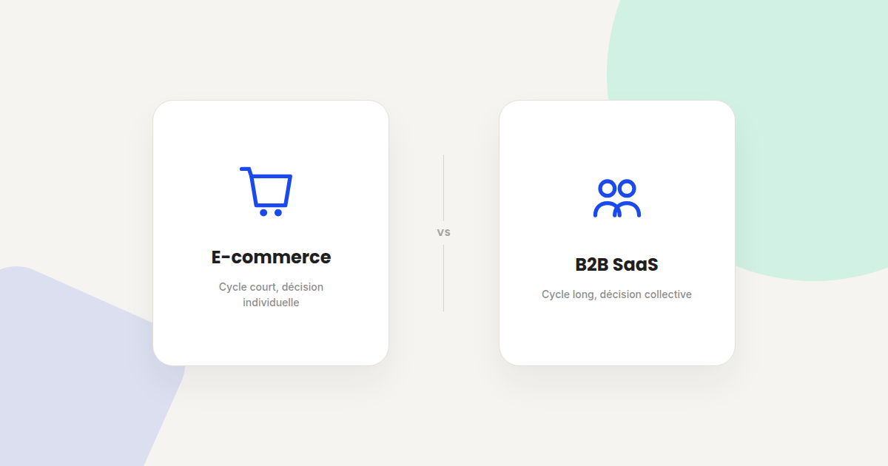

Growth marketing B2B SaaS vs e-commerce : deux logiques qu'on confond trop souvent
Beaucoup de contenu growth marketing se présente comme universel, alors qu'il a été pensé pour un modèle précis — le plus souvent l'e-commerce. Appliqué tel quel à un SaaS B2B à cycle de vente long, une bonne partie de ce playbook ne fonctionne simplement pas. Voici ce qui change vraiment.

« On devrait faire comme telle marque e-commerce qui cartonne sur TikTok » est une phrase que j'entends parfois de la part de clients B2B SaaS, et qui part d'un bon instinct — s'inspirer de ce qui marche — appliqué au mauvais modèle. Voici, canal par canal, ce qui change vraiment entre les deux.
Le cycle de décision
En e-commerce, la décision se prend souvent en une session, par une seule personne, sur des montants qui restent gérables sans validation externe. En B2B SaaS, la décision implique fréquemment plusieurs interlocuteurs (utilisateur, décideur budgétaire, parfois la DSI), sur des semaines voire des mois. Un tunnel de conversion pensé pour une décision impulsive n'a simplement pas la structure pour accompagner une décision collective et étalée dans le temps.
Ce qui change canal par canal
Réseaux sociaux et UGC
Puissants en e-commerce B2C, où la preuve sociale rapide (avis, unboxing, UGC) accélère une décision déjà impulsive. En B2B SaaS, l'effet est plus indirect : la présence sociale construit la crédibilité et la notoriété sur la durée, mais rarement une conversion directe et immédiate.
Email marketing
En e-commerce, l'email sert surtout la relance (panier abandonné, réachat). En B2B SaaS, il sert davantage le nurturing sur un cycle long — accompagner un prospect qui n'est pas encore prêt à acheter, sur plusieurs semaines, avec du contenu à valeur ajoutée plutôt qu'une offre commerciale répétée.
Contenu et SEO
En e-commerce, le contenu sert principalement à capter une intention de recherche transactionnelle proche de l'achat. En B2B SaaS, le contenu joue souvent un rôle plus large dans la décision finale — un prospect peut consulter plusieurs articles de fond avant même d'entrer en contact commercial, ce qui rend le contenu éducatif directement stratégique plutôt qu'accessoire.
Ce qui ne change pas entre les deux modèles
- La nécessité de mesurer sur la valeur réelle générée, pas seulement sur le volume de leads ou de ventes — un CAC bas avec une mauvaise rétention reste un mauvais calcul dans les deux modèles.
- L'importance du tracking pour attribuer correctement la conversion à son origine réelle, que le cycle dure trois minutes ou trois mois.
- Le principe qu'un mauvais produit ou une mauvaise expérience ne se rattrape pas durablement par plus de budget d'acquisition, quel que soit le modèle économique.
Comment adapter un playbook plutôt que le copier
Avant de reprendre une tactique growth qui a fonctionné ailleurs, la bonne question n'est pas « est-ce que ça a marché » mais « dans quel contexte de décision ça a marché, et le mien lui ressemble-t-il ». Un cycle de décision court et individuel appelle des leviers d'impulsion ; un cycle long et collectif appelle des leviers de construction de confiance étalés dans le temps.
FAQ
Le paid social fonctionne-t-il en B2B SaaS ?
Oui, mais avec un rôle différent qu'en e-commerce : plus orienté vers la notoriété et la génération de leads à nourrir sur la durée que vers la conversion directe et immédiate.
Le content marketing est-il plus important en B2B qu'en e-commerce ?
Il joue un rôle différent plutôt que d'être simplement plus ou moins important : en e-commerce il capte une intention proche de l'achat, en B2B SaaS il accompagne souvent une décision qui se construit sur plusieurs semaines.
Peut-on appliquer les mêmes indicateurs de succès aux deux modèles ?
Les indicateurs de fond (CAC, LTV, taux de conversion) restent pertinents dans les deux cas, mais leurs valeurs de référence et la façon de les mesurer diffèrent fortement selon la longueur du cycle de décision.
Un playbook growth à adapter à votre modèle réel ?
Pour aller plus loin, voir la page CRO, la page Analytics, et la page Comment je travaille.
Pour continuer sur ce sujet.